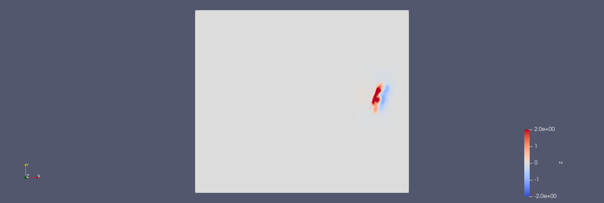
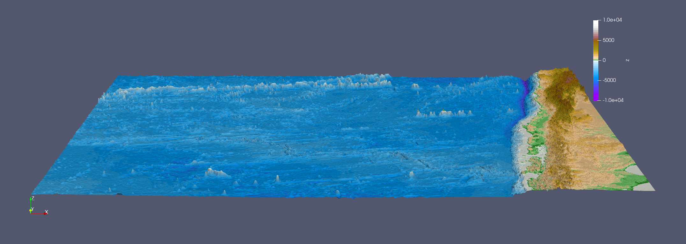
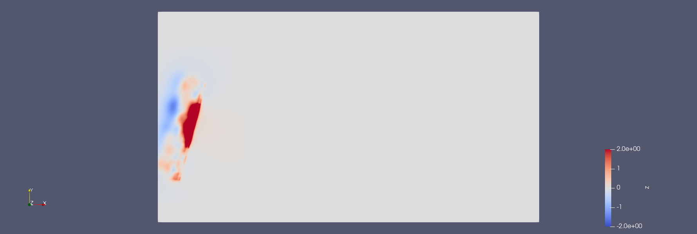
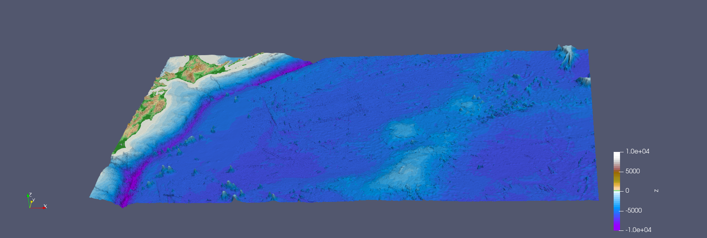

6. Tsunami Simulations
All project authors contributed to this assignment in equal parts.
6.1 - 2010 M 8.8 Chile Event
6.1.1 - Visualization of input
scaling interval[-2,2].
scaling interval[-10000,10000].
6.1.2 - Simulations
Chile 1000
grid size: 1000
Chile 5000
grid size: 5000
6.2 - 2011 M 9.1 Tohoku Event
6.2.1 - Visualization of input
scaling interval[-2,2].
scaling interval[-10000,10000].
Simulations
Tohoku 1000
grid size: 1000 Leaves the top domain at 2900 seconds. Computational demand: per timestep we update 4050000 cells.
Tohoku 5000
grid size: 5000
6.2.2 - Soma
We have put the station at x=120000 and y=50000.
The initial water height is -0.7 meters. It steadily decreases and reaches its minimum at 2620 seconds at -2.1 meters. The water level starts rising and at 3320 surpasses 0 meters and thus the wave reaches Soma. The wave reaches Soma after 55 minutes. It then steadily rises and reacehs its maximum at 3870 seconds with 4.45 meters.
Computation
Given is:
We used 15 meters as our water height from the epicenter to compute the speed.
\(\lambda = \sqrt{9.81*15} = 12.33 m/s\)
Multiply by 3.6 to get km/h: 44.39km/h.
Using the Pythogaros we get a distance to the station 130 kilometers.
Dividing it by the speed we get a time of 2.92 hours.